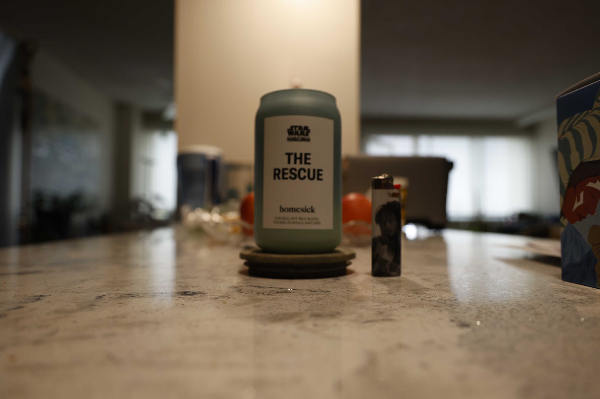
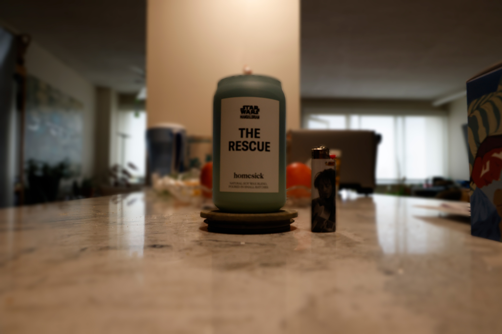
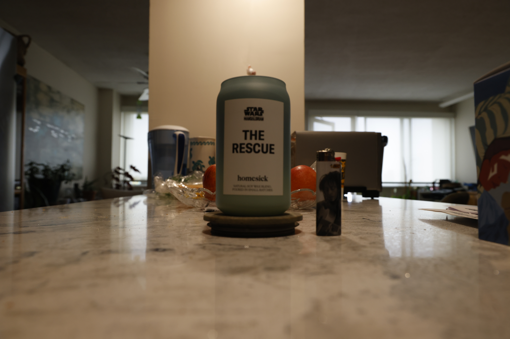
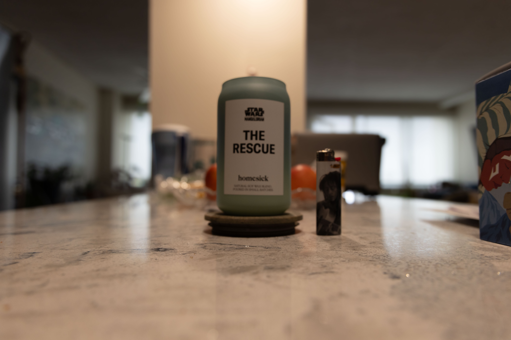

Manually shot shallow depth of field photo.

Digitally edited shallow depth of field photo.

Manually shot deep depth of field photo.

Screenshot of raw deep depth of field photo.

This is my exposure edit. I managed to add some grain to the photo that I don’t think was intentional. I changed the exposure of this image very subtly.